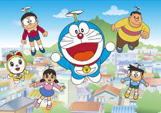

Aplicaciones Telemáticas
Este es el ejercicio 1 de la asignatura:
Aplicaciones Telemáticas
Enlaces de interés:
Mejores Dibujos de Todos los Tiempos
- Mazinger Z
- Un robot manejado por un chico llamado Koji que, junto con Afrodita (manejada por Sayaka),
salva al mundo del malvado Doctor Infierno y el Barón Ashler
- Doraemon
- Gato Cósmico del futuro que ayuda a un niño (Nobita) a aprobar sus meterias pero nunca lo consigue
